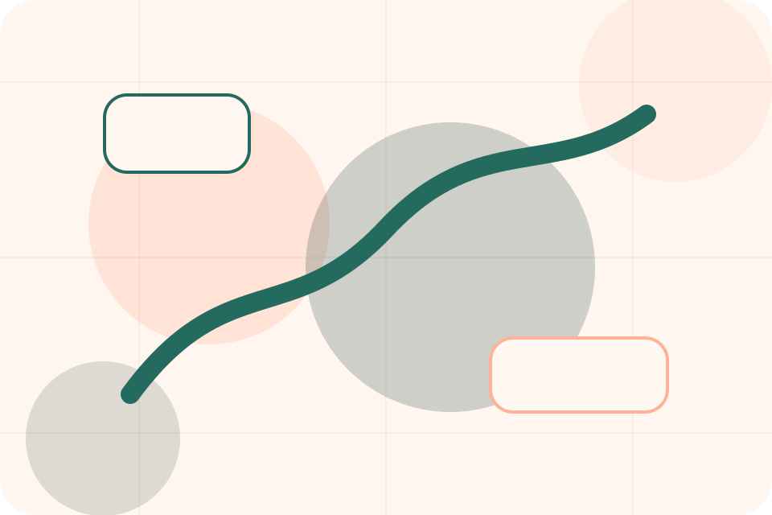
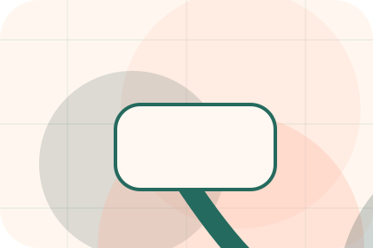
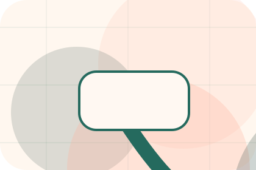
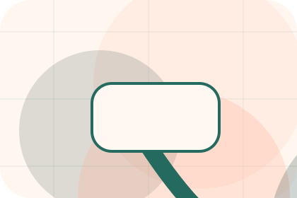
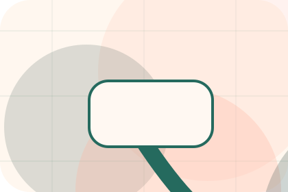
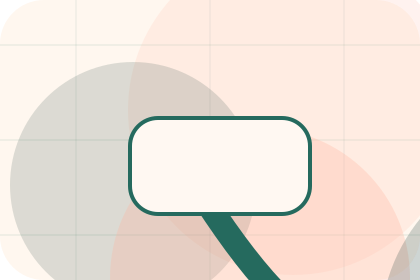
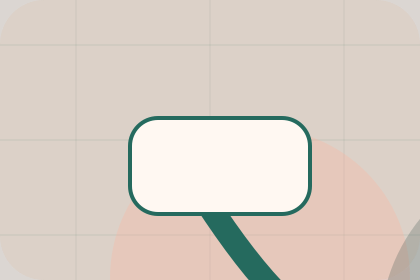

Clinic / 01
Clinic by Paw
Clinic shaped for pets, animals & veterinary services decisions.
Clinic opens as a clear pets decision hub: what Paw offers, who it helps, why it matters, and which route to take first.
The first screen combines positioning, proof, primary action, and fast internal navigation, so people can act immediately or compare the rest of the clinic route with context.
Clear intakeHuman follow-upPractical reassurance
Warm appointment hero
Route the care need
Select the closest route and Paw keeps the next step, proof, and follow-up expectation aligned with care and quick triage.

Clinic / 02
Values inside clinic
Values adds care context to the clinic route, using the modern clinic care flow structure to support care and quick triage before visitors choose a next step.
Paw uses rounded care cards and focused copy to make the decision easier to scan, aligning the section with care and quick triage rather than filling space.
Explore Clinic
Context
Values gives the page a specific angle instead of repeating the navigation label.

Judgment
The rounded care cards show what to compare, what to avoid, and what matters most for pets, animals & veterinary services visitors.
Direction
The final cue points to a useful internal route so the section keeps the journey moving.
Clinic / 03
Facilities inside clinic
Facilities adds care context to the clinic route, using the modern clinic care flow structure to support care and quick triage before visitors choose a next step.
Paw uses rounded care cards and focused copy to make the decision easier to scan, aligning the section with care and quick triage rather than filling space.
Explore ClinicContext
Facilities gives the page a specific angle instead of repeating the navigation label.
Clinic / 04
Standards, not claims
Standards gives the proof layer for clinic: standards, evidence, and reassurance that make the next decision feel grounded.
Instead of relying on vague claims, Paw presents visible standards, process cues, and proof artifacts that help pets visitors judge fit.
Explore ClinicEvidence
Visible proof that helps visitors believe the claims behind standards.

Standard
The quality, safety, or operating expectation this section makes explicit.
Reassurance
What becomes clearer before someone decides whether to book a visit.
Clinic / 05
Who handles team
Team introduces the people, roles, or specialist credibility behind Paw so the decision feels less anonymous.
The copy ties names, roles, credentials, or availability back to the decision on the page instead of treating profiles as decorative biographies.
Explore Clinic- 01
Role
The person, team, or specialist function connected to team is easy to understand.
- 02
Credibility
Credentials, responsibilities, or availability are tied to the visitor's decision, not listed for decoration.
- 03
Handoff
The section explains how to move from profile interest to a practical conversation or booking path.
Clinic / 06
Stories behind reviews
Reviews converts customer proof into a useful buying signal: the problem, the experience, and what changed afterward.
Proof stays believable by focusing on situation, service experience, and practical change rather than vague praise or unsupported results.
Explore ClinicSituation
What the visitor needed before choosing Paw, written with enough context to feel real.
Experience
How the service, product, or support felt during the process, not just that it was good.
Change
What became easier to decide, complete, buy, book, or trust after the interaction.
Clinic / 07
Welfare inside clinic
Welfare adds care context to the clinic route, using the modern clinic care flow structure to support care and quick triage before visitors choose a next step.
Paw uses rounded care cards and focused copy to make the decision easier to scan, aligning the section with care and quick triage rather than filling space.
Explore Clinic

Context
Welfare gives the page a specific angle instead of repeating the navigation label.
Clinic / 08
Experience inside clinic
Experience adds care context to the clinic route, using the modern clinic care flow structure to support care and quick triage before visitors choose a next step.
Paw uses rounded care cards and focused copy to make the decision easier to scan, aligning the section with care and quick triage rather than filling space.
Explore ClinicContext
Experience gives the page a specific angle instead of repeating the navigation label.
Judgment
The rounded care cards show what to compare, what to avoid, and what matters most for pets, animals & veterinary services visitors.
Direction
The final cue points to a useful internal route so the section keeps the journey moving.
Clinic / 09
Trust, not claims
Trust gives the proof layer for clinic: standards, evidence, and reassurance that make the next decision feel grounded.
Instead of relying on vague claims, Paw presents visible standards, process cues, and proof artifacts that help pets visitors judge fit.
Explore Clinic- 01
Evidence
Visible proof that helps visitors believe the claims behind trust.
- 02
Standard
The quality, safety, or operating expectation this section makes explicit.
- 03
Reassurance
What becomes clearer before someone decides whether to book a visit.
Clinic / 10
Book Visit
Paw closes the clinic route with a clear action, a quick reminder of the value, and a low-friction way to book a visit.
Visitors who are ready can use the primary action. Visitors who are still comparing can scan the section links, proof, and support routes before they book a visit.
Book VisitThe final block keeps the choice simple: act now, compare one more proof route, or send enough detail for a focused response.
Book Visitcare and quick triage
Book Visit
A veterinary site with warm urgent-care modules, appointment paths, team proof, and symptom routing. Clinic ends with a direct path to book a visit, plus enough context for visitors who still need to compare.

Book VisitImportant notes before you act
Pet health content is general; urgent symptoms require direct veterinary care.